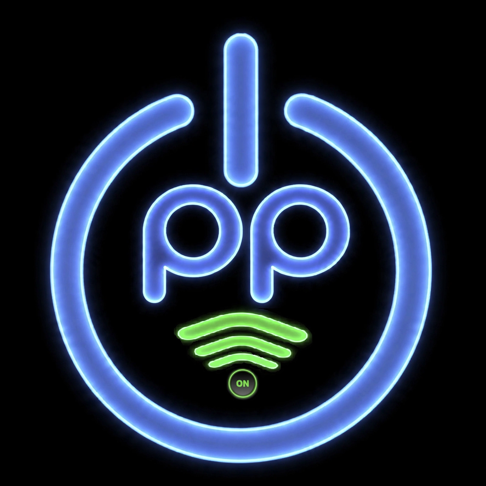

OppOn · Bot Institucional
A porta de entrada institucional no Telegram: enxuta, movida a botões e sem custo. O OppOn apresenta a Opp e o básico do comercial; quando precisa de gente, entrega a conversa para o WhatsApp — o balcão humano que a empresa já opera.
Institucional + básico do comercial, automático por botões: quem é a Opp, os serviços, capta pedido de proposta e aponta o caminho. Custo zero, disponível sempre.
Quando entra pessoa: negociação, proposta e relação seguem no WhatsApp, no atendimento manual que já existe. O OppOn nunca finge automação que a empresa não tem.

O neon azul é a assinatura só do OppOn — um traço hi-tech que separa o assistente da identidade corporativa, que segue verde. Avatar: o botão power desenhado com as duas P's da Opp e o sinal verde “ON”, em neon azul sobre fundo escuro.
O bot só coleta e registra. Nenhum valor, nenhuma promessa — o retorno é humano, pelo WhatsApp. É a captura sem carregar a equipe.
Para o Telegram, use o ícone neon (color, sem nome) como foto de perfil — 512×512, centralizado no círculo. As versões com nome servem para posts e capas; as transparentes, para montagens; as flat pretas, para uso monocromático.
"Grupo Opp+" e "Opp Gestão de Ativos" são marcas de marketing da razão social acima.